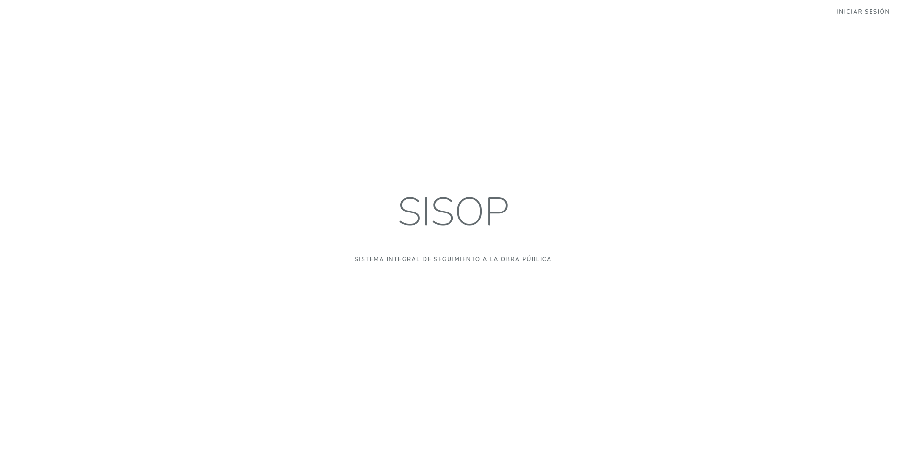
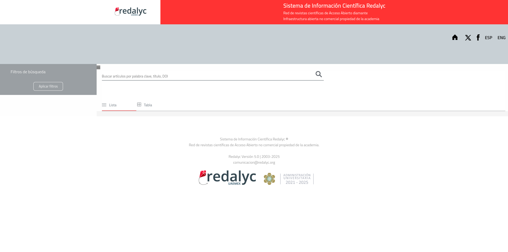

Experiencia Laboral
SISOP: Gobierno del Estado de México
Agosto 2024 - Diciembre 2024
Desarrollador web
Implementé nuevas funcionalidades para la carga de archivos
Automaticé reportes y mejoré la visualización en la plataforma
Colaboré con un equipo de 4 personas, gestionando la colaboración de cambios con git
Redalyc
Agosto 2023 - Diciembre 2023
Desarrollador web
Desarrollé una nueva página para la búsqueda de artículos publicados
Prticipé activamente en la semana de la cumbre de Redalyc, tuve la oportunidad de conocer personas de diferentes partes del mundo